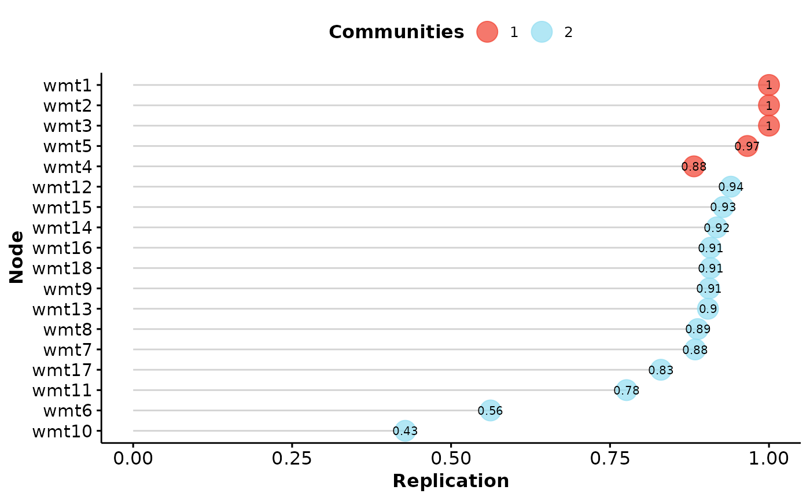

Based on the bootEGA results,
this function computes the stability of dimensions. Stability is
computed by assessing the proportion of times the
original dimension is exactly replicated in across bootstrap samples
Arguments
- bootega.obj
A
bootEGAobject- IS.plot
Boolean (length = 1). Should the plot be produced for
item.replication? Defaults toTRUE- structure
Numeric (length = number of variables). A theoretical or pre-defined structure. Defaults to
NULLor the empiricalEGAresult in thebootega.obj- ...
Additional arguments. Used for deprecated arguments from previous versions of
itemStability
Value
Returns a list containing:
- dimension.stability
A list containing:
- item.stability
Results from
itemStability
References
Original implementation of bootEGA
Christensen, A. P., & Golino, H. (2021).
Estimating the stability of the number of factors via Bootstrap Exploratory Graph Analysis: A tutorial.
Psych, 3(3), 479-500.
Conceptual introduction
Christensen, A. P., Golino, H., & Silvia, P. J. (2020).
A psychometric network perspective on the validity and validation of personality trait questionnaires.
European Journal of Personality, 34(6), 1095-1108.
Author
Hudson Golino <hfg9s at virginia.edu> and Alexander P. Christensen <alexpaulchristensen@gmail.com>
Examples
# Load data
wmt <- wmt2[,7:24]
if (FALSE) {
# Estimate bootstrap EGA
boot.wmt <- bootEGA(
data = wmt, iter = 500,
type = "parametric", ncores = 2
)}
# Estimate stability statistics
dimensionStability(boot.wmt)

#> EGA Type: EGA
#> Bootstrap Samples: 500 (Parametric)
#>
#> Proportion Replicated in Dimensions:
#>
#> wmt1 wmt2 wmt3 wmt4 wmt5 wmt6 wmt7 wmt8 wmt9 wmt10 wmt11 wmt12 wmt13
#> 1.000 1.000 1.000 0.882 0.966 0.562 0.884 0.888 0.906 0.428 0.776 0.940 0.904
#> wmt14 wmt15 wmt16 wmt17 wmt18
#> 0.918 0.928 0.908 0.830 0.908
#>
#> ----
#>
#> Structural Consistency:
#>
#> 1 2
#> 0.860 0.356